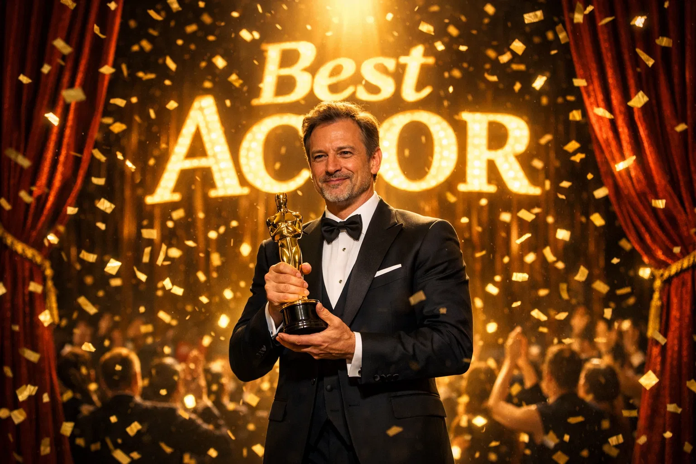
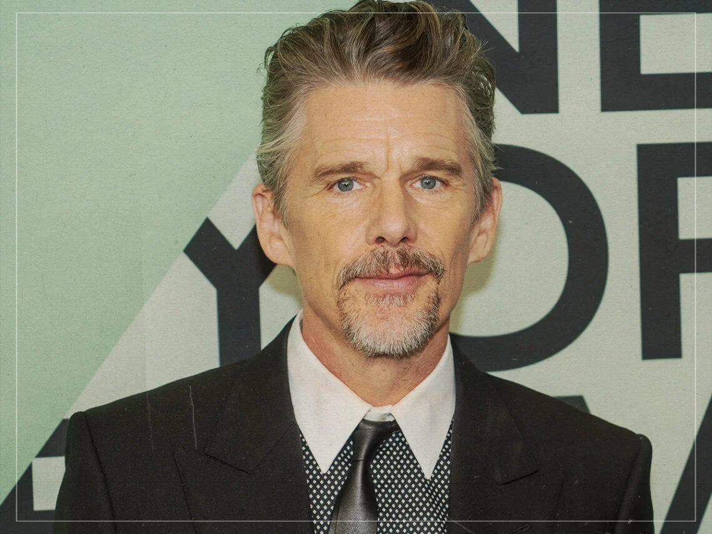
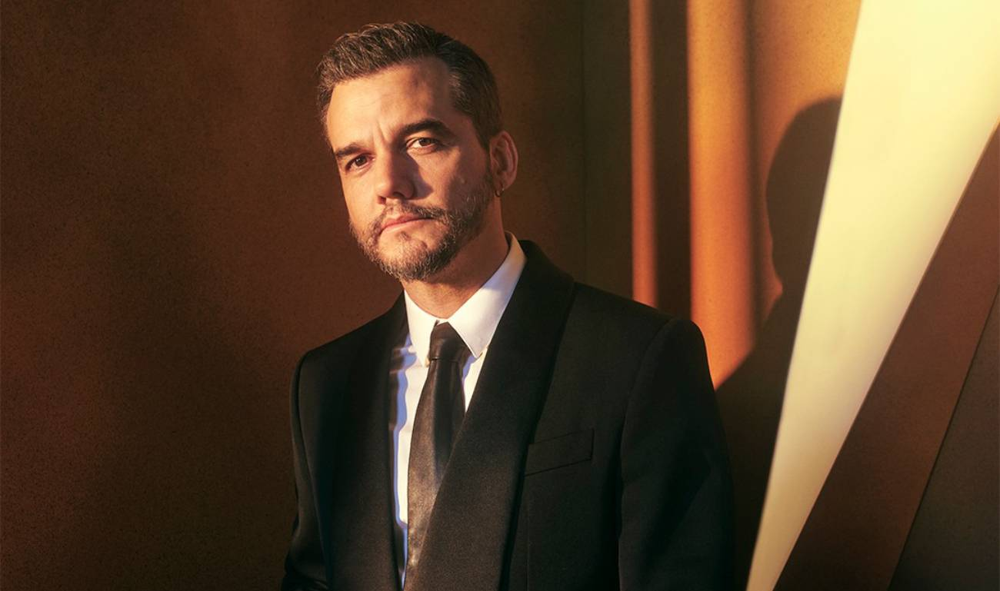

98th Annual Academy Awards
Melhor Ator
Conheça os candidatos à Premiação do Oscar 2026 por Melhor Ator
Vencedor
Michael B. Jordan
Pecadores
Jordan entrega uma performance dupla exigente, diferenciando os irmãos não apenas pela fala, mas pela postura física. Ele transita entre a autoridade protetora e o medo visceral, mantendo a intensidade que é sua marca registrada.
Foi amplamente elogiado por sua capacidade de carregar o filme nas costas. A crítica destacou que sua colaboração com Coogler continua a extrair o que há de melhor nele, descrevendo sua atuação como "eletrizante" e essencial para elevar o terror para além dos sustos superficiais.

Timothée Chalamet
Marty Supreme
Chalamet se afasta de seus papéis mais introspectivos para entregar algo mais hiperativo e estilizado. Ele encarna a obsessão e a energia frenética típica do cinema dos irmãos Safdie, focando na natureza competitiva e quase maníaca do personagem.
A crítica celebrou essa "nova fase" de Chalamet, notando que ele se adaptou perfeitamente ao ritmo caótico de Safdie. Sua performance foi descrita como "carismática e obsessiva", provando sua versatilidade para além dos dramas românticos.

Leonardo DiCaprio
Uma Batalha Após a Outra
DiCaprio interpreta um personagem complexo em uma trama que envolve política, crime e laços familiares. Sua atuação é descrita como crua e menos "glamorosa" do que em seus últimos trabalhos, focando na exaustão e na resiliência.
Como é de praxe em filmes de PTA, a crítica exaltou a entrega total de DiCaprio. Especialistas notaram que ele parece "revigorado", entregando uma performance que evita tiques conhecidos e mergulha em uma humanidade falha e profundamente comovente.

Ethan Hawke
Blue Moon: Música e Solidão
Hawke usa sua própria maturidade e voz para criar um retrato devastador de um artista em declínio. É uma atuação contida, focada no arrependimento e na busca por uma última nota de redenção através da música.
Foi chamada de uma das performances mais "espirituais" de sua carreira. A crítica destacou que Hawke consegue transmitir a solidão do título apenas com o olhar, sendo aclamado por sua autenticidade e pela recusa em sentimentalizar o sofrimento do personagem.

Wagner Moura
Agente Secreto
Moura entrega uma performance baseada na tensão constante e no silêncio. Ele interpreta um homem que vive sob vigilância e paranoia, equilibrando a fachada de normalidade com o pavor interno de ser descoberto.
A atuação de Moura foi descrita como "magnética e precisa". A crítica internacional e nacional elogiou a forma como ele ancora o suspense do filme, utilizando uma economia de gestos que torna cada explosão emocional muito mais impactante. É visto como um de seus trabalhos mais maduros e politicamente carregados.